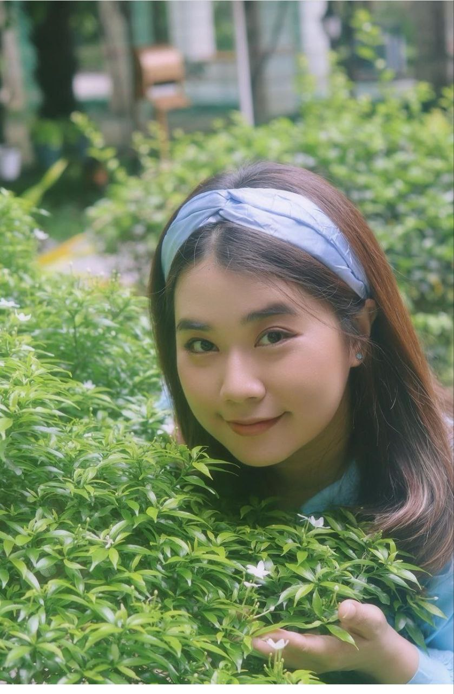
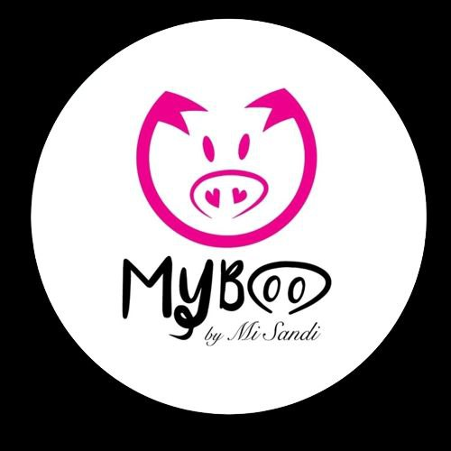
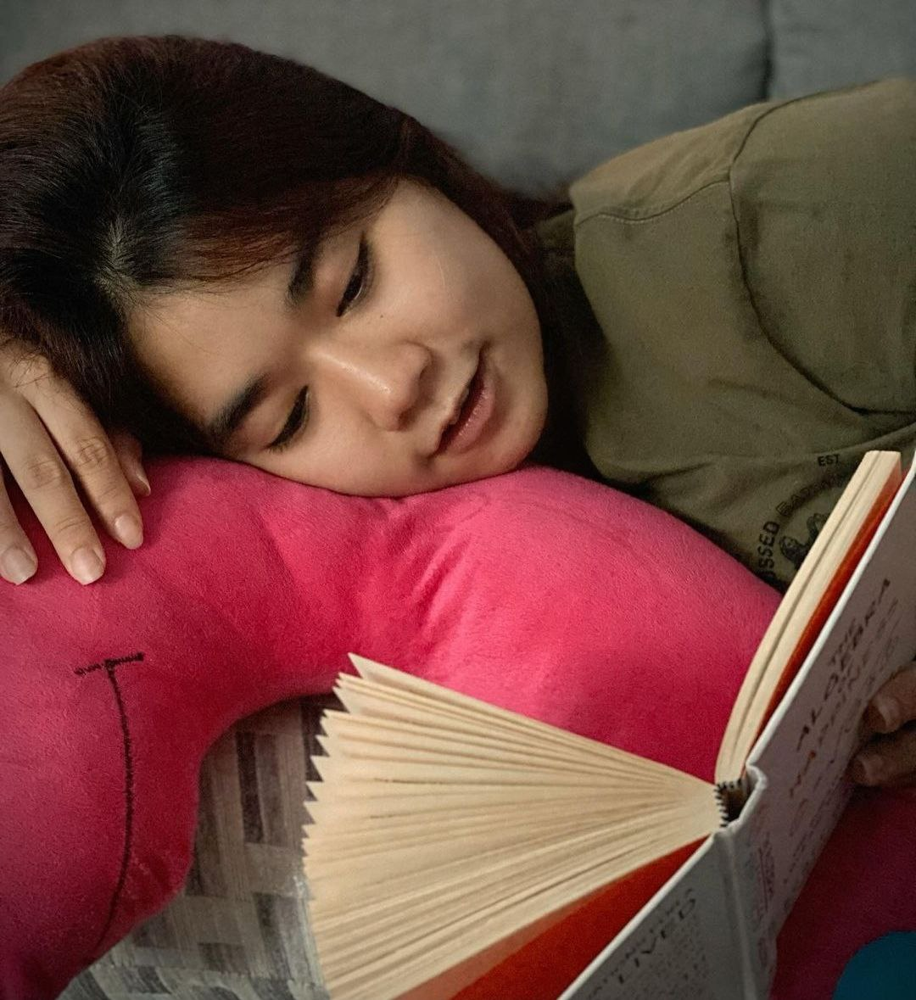
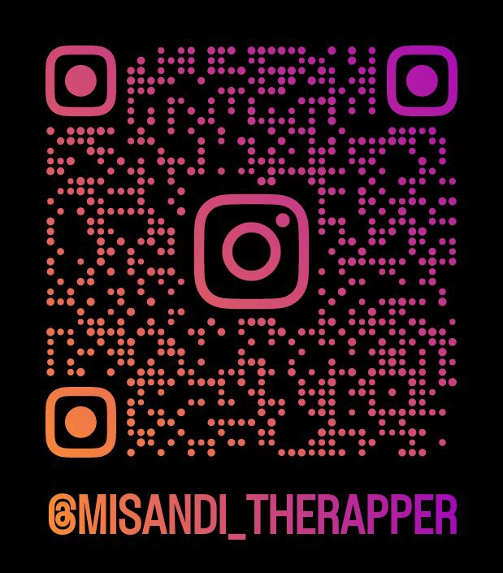

MY Tribute |
My Profile | About | Social media | Contact |
| |
Misandi Min Nyan Birth was on 12 June 1990 Famous Female Rapper and Hip Hop Singer |
 |
Mi Sandi, a native of Yangon, Myanmar, entered this world on June 8, 1990. She embarked on her academic journey and earned her Bachelor of Business Management (BBM) degree in 2010 from the International Management College. Her quest for knowledge continued, leading her to obtain a diploma in Accounting and Management Accounting from LCCI (UK) in 2011. Building on her strong educational foundation, she pursued a Master of Business Management (MBA) in 2014. Mi Sandi's dedication to her studies and her commitment to academic excellence have undoubtedly played a significant role in shaping her professional journey.
Owner of MY Boo |
She swag She rap |
||
|  | |||
|  |
Mi Sandi began her music career in Myanmar and quickly gained recognition for her vocal talent and stage presence.She released several albums and singles that became hits in the Burmese music scene.Apart from her music career, she also made appearances on television, participating in various programs and events.Some artists in Myanmar, including Mi Sandi, have been known for their involvement in charitable activities and using their platform to raise awareness about social issues.
Albums |
|
| Solo Albums | Single Albums |
|
|
A Lwan Yat Htu Htal |
A yu A Mu |
Zay Bann |
|
Special Music Award of the Monsoon, 2014 The Best Selling Studio Music Album, Female Vocalist of the Year, 2018 (City FM)
|  Instragm |
Meta |
Spotify |